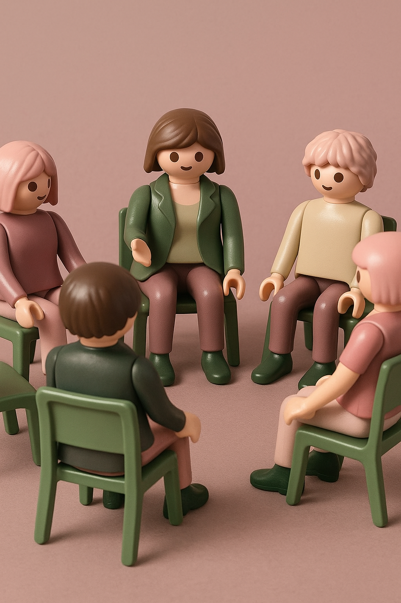
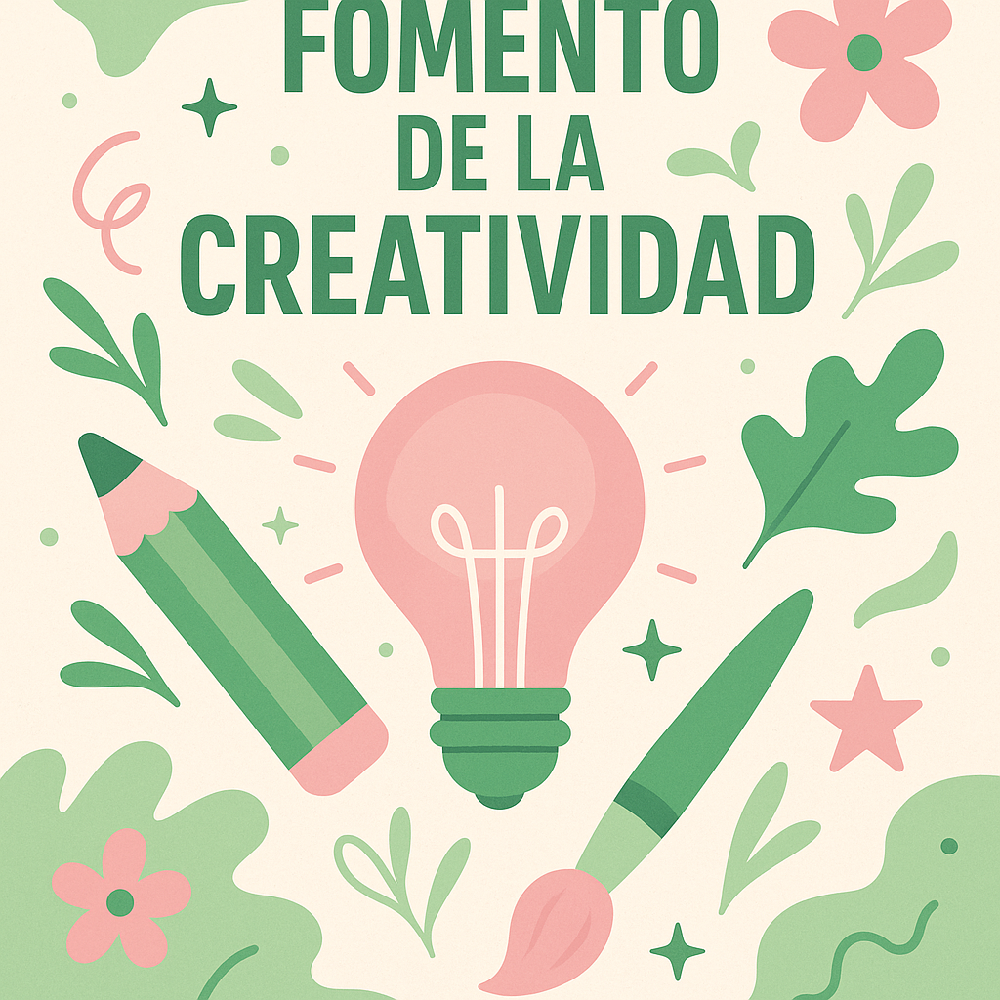
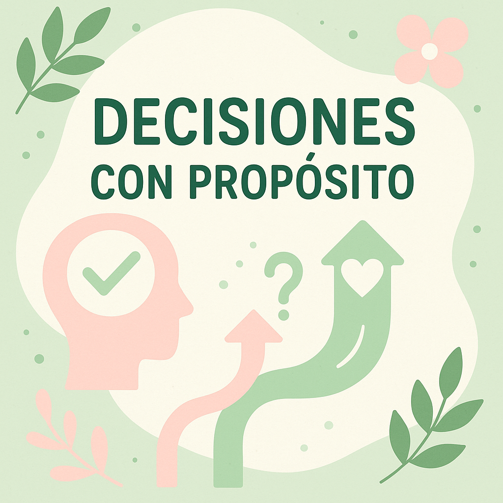
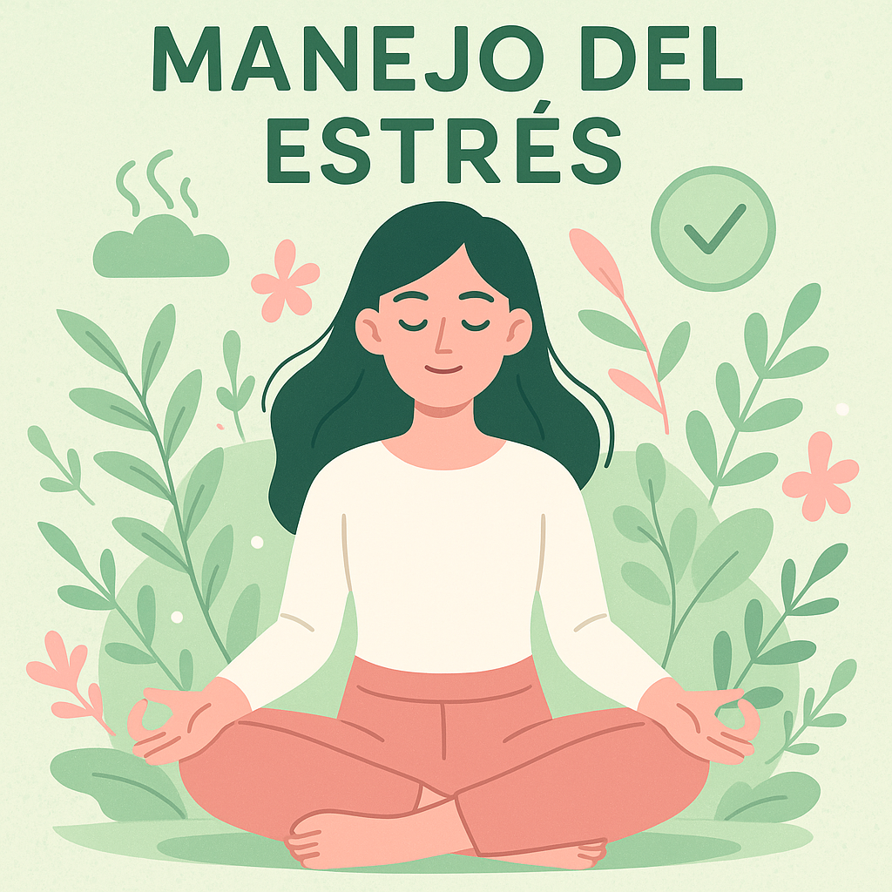

“La conexión con la naturaleza es una fuente profunda de bienestar,
y por eso forma parte esencial de mi manera de acompañar a las personas en terapia.”

¿conoces la terapia con muñecos?
Es una herramienta terapéutica súper útil para:
- Expresar emociones: a veces es difícil poner en palabras lo que sentimos. ¡Los muñecos nos pueden ayudar a hacerlo!
- Entender situaciones: podemos recrear momentos difíciles y encontrar formas de afrontarlo.
- Mejorar la comunicación: aprendemos a expresar nuestras necesidades y a escuchar a los demás.
¿TE ANIMAS A LANZAR LOS DADOS HACIA UN NUEVO CAMINO?

FOMENTO DE LA CREATIVIDAD

DECISIONES CON PROPÓSITO

EXPLORACIÓN EMOCIONAL

MANEJO DE ESTRÉS
¿Sabes que los dados pueden ser una herramienta sorprendente en terapia?
Más allá de los juegos de mesa, los dados ofrecen una forma creativa de explorar emociones, tomar
decisiones y romper patrones de pensamiento.
¿Has probado alguna vez usar dados para explorar tus emociones?
Si estas buscando nuevas formas de cuidar tu bienestar emocional, estoy aquí para acompañarte en el
camino y juntos/as podemos descubrir maneras de crecer y sanar.